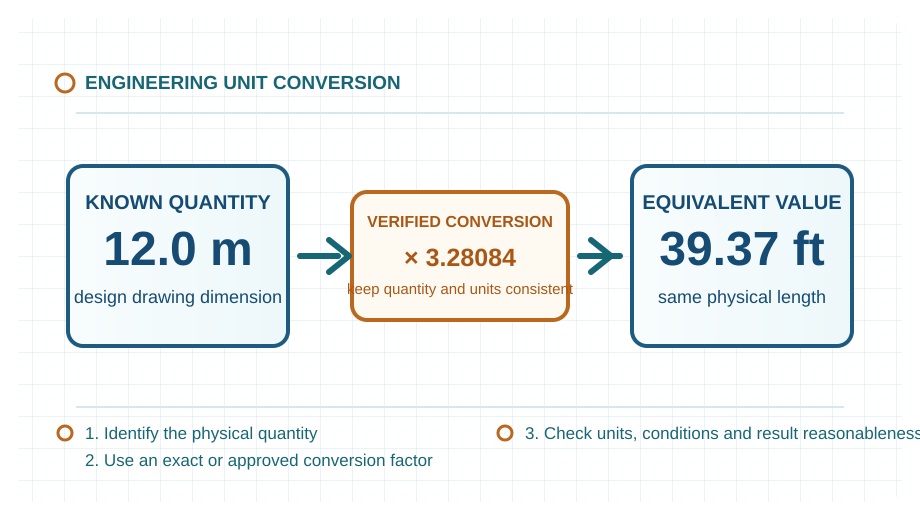

Engineering knowledge guide
Engineering Unit Conversion Explained
Unit conversion preserves a physical quantity while changing its numerical unit. This guide explains how to select a conversion basis, keep dimensions consistent and use area, length, pressure, temperature, volume, mass and force values responsibly in engineering work.

- Content type
- Engineering knowledge guide
- Primary use
- Learning, preliminary checks and unit consistency review
- Coverage
- Area · length · pressure · temperature · volume · mass and force
- Updated
- 25 August 2026
What is engineering unit conversion?
A measurement is written as a number multiplied by a unit. A correct conversion replaces the unit with an equivalent unit and adjusts the number by the corresponding conversion factor. The physical quantity remains unchanged: 1 metre and 1,000 millimetres describe the same length.
In engineering work, units also express the meaning of a result. A length, an area, a force and a pressure are different quantities even when their numerical values happen to be similar. Dimensional consistency is therefore a basic check on drawings, calculations, data sheets and reports.
A reliable engineering conversion method
- Identify the quantity. Confirm whether the value represents length, area, volume, absolute pressure, gauge pressure, mass, force, temperature or a temperature difference.
- Record the basis. Keep the unit, reference condition, drawing note or data-source condition with the original value.
- Use a compatible conversion factor. Square linear factors for area and cube them for volume; do not apply a linear factor directly to an area or volume.
- Calculate with consistent units. Convert all inputs before combining them in an equation unless the equation is explicitly prepared for mixed units.
- Check the result. Confirm the expected unit, order of magnitude, decimal position and engineering reasonableness.
- Use controlled project data for final work. Approved drawings, codes, specifications and a qualified engineer govern design, procurement, construction and operation.
Area measurement and conversion
Area measures the extent of a surface. Its SI derived unit is the square metre (m²), and its dimensional form is L². It is used in plate take-off, heat-transfer surface, floor loading, insulation coverage, duct surface area and land or layout work.
Because area is squared length, a length conversion factor must be squared. For example, changing metres to millimetres multiplies the numerical area by one million, not one thousand. Confirm whether the required area is projected, plan, internal, external, wetted or developed surface area before using the result.
Length measurement and conversion
Length is an SI base quantity with the unit metre (m) and dimensional form L. Engineering drawings commonly show millimetres, while piping, structural, civil and equipment layouts may use metres, feet or inches depending on the project basis.
Use the drawing’s stated unit and preserve its tolerance. A dimension converted for communication does not replace the controlling dimension. Exact conversion is particularly important for interfaces such as pipe spools, flanges, bolt patterns, nozzles and manufactured equipment.
Pressure measurement and conversion
Pressure is force acting normal to unit area. Its SI unit is the pascal (Pa), equal to one newton per square metre (N/m²). Industrial work also uses kPa, MPa, bar, psi, millimetres of water column and millimetres of mercury.
The essential distinction is between absolute pressure and gauge pressure. Absolute pressure uses a vacuum reference; gauge pressure uses local atmospheric pressure as its reference. A number stated only as “bar” or “psi” can be incomplete when a process, vacuum, compressor or safety calculation depends on the pressure reference.
Temperature scales and conversion
Thermodynamic temperature has the SI base unit kelvin (K). Celsius, Fahrenheit and Rankine are also widely encountered. Temperature conversions use both scale factors and offsets; they are not simple multiplication in every case.
A temperature difference is treated differently from an absolute temperature. A change of 1 °C equals a change of 1 K, but 0 °C is not 0 K. Use an absolute scale such as kelvin when an equation requires an absolute temperature, including many gas-law and thermodynamic relations.
Volume measurement and conversion
Volume measures occupied space. Its SI derived unit is cubic metre (m³), with dimensional form L³. Litres, cubic feet, gallons and millilitres are common in equipment, process and laboratory work.
A volume conversion requires the cube of the relevant length factor. In addition, capacity must be defined: a vessel’s geometric volume, internal volume, working volume, operating inventory and usable capacity may all differ. Do not use an external vessel envelope when an internal fluid capacity is required.
Mass, weight and force conversion
Mass is the amount of matter and has the SI base unit kilogram (kg). Force has the SI derived unit newton (N). Weight is the gravitational force on a mass, commonly represented by W = m × g, where g is the stated gravitational acceleration.
In engineering communication, “weight” is often used informally for a mass in kilograms or tonnes. For load calculations, lifting studies and structural design, distinguish mass from force and state whether a value is kg, kgf, N, kN, lbf or tonne-force. The conversion from mass to force depends on the gravity basis used.
Important limits and common mistakes
- Applying a linear conversion factor to an area or volume.
- Mixing absolute pressure with gauge pressure.
- Using Celsius in a relation that requires absolute temperature.
- Confusing mass in kg with force in N or kN.
- Confusing US gallons with Imperial gallons.
- Rounding intermediate values before a tolerance-sensitive calculation is complete.
- Using a legacy unit without confirming its definition, condition and project specification.
Technical check list
Before relying on this guide
Confirm that the calculation or selection is based on the actual service rather than a nominal description. Identify the current drawing and data-sheet revisions, the operating period represented by measurements, the unit and reference-condition basis, and the responsible person for each critical input. This prevents a valid principle from being applied to an incompatible boundary or outdated condition.
Questions for a competent review
- Does the selected method address the geometry, material, fluid, equipment arrangement and operating range in question?
- Have minimum, maximum, start-up, shutdown, upset, maintenance and future cases been screened where they could govern?
- Are the result, tolerance and rounding appropriate for the quality and uncertainty of the available input data?
- Are plant constraints such as access, isolation, inspection, utilities, controls, safety and environmental duty included in the decision?
- Is there a documented field-verification step before a design, procurement or operating change is approved?
If one of these questions cannot be answered, retain the limitation in the technical record and obtain the necessary evidence or specialist review. The value of an engineering guide is not merely a result; it is a transparent basis for a safe, traceable and practical decision.
Expanded technical guide
Engineering Context and Practical Use
Learn the engineering principles of unit conversion, SI and customary units, dimensional consistency, and the correct use of area, length, pressure, temperature, volume, mass and force conversions. Engineering reference articles should be used with a stated method, representative inputs, current drawings and qualified review for the actual service condition.
Define the physical and operating boundary before selecting equipment, interpreting performance or changing a set point. Consider normal operation, start-up, shutdown, minimum and maximum duty, maintenance condition, upset cases, seasonal effects and credible future modifications. A non-normal case can govern capacity, reliability, integrity, quality, environmental duty or safety.

Data and assessment basis
Define the boundary
inputs → equipment or system → outcome
Identify interfaces, reference points and the actual decision the assessment supports.
Use compatible data
result = valid method + representative inputs
Record units, service condition, source revision, material or fluid basis and uncertainty.
Check the limit
normal case ≠ governing case
Review the condition that controls capacity, reliability, safety, serviceability or performance.
Verify the result
assessment ↔ field evidence
Compare the conclusion with inspection, measurements, supplier limits and controlled documents.
Practical engineering method
- Define the duty, system boundary, required decision and applicable project or code basis.
- Collect current drawings, data sheets, service properties, operating trends and maintenance history.
- Set normal, minimum, maximum, start-up, upset and future cases that are relevant to Engineering Unit Conversion Explained.
- Select a method appropriate to the actual configuration and valid range.
- Review interfaces with utilities, controls, access, inspection, isolation and protection systems.
- Test important sensitivities where uncertainty could change the decision.
- Record inputs, sources, limitations, reviewer actions and field-verification requirements.
Operation, maintenance and reliability
Operating condition
Trend the parameters that reveal loss of duty, integrity, quality or environmental performance.
Maintenance access
Provide safe isolation, inspection, cleaning, lifting, spares and reinstatement for the actual arrangement.
Controls and safeguards
Check alarms, trips, interlocks and manual actions over the complete operating envelope.
Change management
Reassess after changes to material, load, fuel, layout, component, software, control or operating procedure.
Field verification
Use calibrated measurements at defined locations and comparable operating conditions.
Competent review
Escalate specialist, code, safety, environmental or supplier decisions beyond this educational scope.
Common decision errors
- Using an obsolete drawing, data sheet, property value or equipment limit.
- Mixing design, actual and reference conditions without a controlled conversion.
- Checking one normal case while missing the governing condition.
- Ignoring maintenance, access, isolation, controls or downstream consequences.
- Claiming precision greater than the evidence supports.
- Treating educational guidance as final design, safety, procurement or compliance approval.
- Failing to update the basis after a controlled change.
Lifecycle Evidence, Field Verification and Change Control
Engineering Unit Conversion Explained should remain connected to current evidence throughout its service life. Material variation, wear, fouling, corrosion, temperature, loading, contamination, control changes, maintenance practice and upstream process variation can change the basis on which equipment or a calculation was originally selected.
Maintain a usable evidence set
Record whether each important input is measured, calculated, supplier-rated, estimated or assumed. Retain the source, revision, date, units, reference condition, measurement location and expected uncertainty. This prevents a result from being compared with an obsolete data sheet, a different operating case or a measurement taken at another system boundary.
Use equivalent operating conditions when comparing field trends. Document production load, material or fuel condition, relevant pressure and temperature, equipment configuration, controls, instruments and maintenance state. A plausible trend can be misleading if these conditions are not comparable.
Check the actual governing condition
Review normal operation as well as start-up, shutdown, low load, maximum duty, dirty condition, maintenance bypass, upset, seasonal effect and credible future modification. The governing case may control capacity, reliability, integrity, emissions, quality, energy, electrical duty, serviceability or safety.
If reasonable uncertainty changes a decision, improve the evidence through inspection, representative testing, calibrated measurement, supplier confirmation, a controlled trial or specialist analysis. This is more valuable than reporting extra decimal places from an uncertain basis.
Turn maintenance into engineering information
Inspection findings can reveal local wear, leakage, buildup, cracking, corrosion, misalignment, overheating, abnormal vibration, control instability or loss of access that simple selection methods do not show. Record the location, condition, observed mechanism, action and follow-up result so future decisions use the actual service history.
Define the early-warning parameters, review trigger, responsible role and escalation path. Repeated alarms, manual intervention, rising energy, pressure loss, reduced capacity, dust release, unstable flow or recurring component damage should be investigated as system evidence, not reset as isolated symptoms.
Implement controlled change
Before changing material, equipment, layout, settings, controls, operating procedure or maintenance practice, check affected drawings, equipment limits, protective functions, isolation requirements, permits, training, spares and downstream interfaces. A local improvement can move a problem to another part of the system.
After implementation, compare measured performance with stated acceptance criteria at comparable conditions, update the controlled record and document any remaining limitation. This page is an educational reference; final project, code, safety, environmental, electrical and procurement decisions require qualified review with current site information.
Core engineering extension
Technical Basis, Interpretation and Engineering Limits
Engineering Unit Conversion Explained is a core engineering subject because it connects directly to how a system is defined, selected, analysed, operated or maintained. A correct result depends on a clear boundary, compatible data, an appropriate method and an understanding of what the method does not include.
Define conditions before applying a relationship
State the material or fluid, geometry, equipment configuration, pressure, temperature, load, flow, reference condition and operating point that each value represents. Distinguish design data from measured data, nominal ratings from actual performance, and a controlled specification from a preliminary estimate. A technically correct relationship can give an unsuitable answer when its inputs represent another condition.
Build the calculation or assessment from a transparent sequence: define the decision; identify the control volume or physical boundary; collect reliable inputs; state assumptions; apply a method within its valid range; compare the result with independent evidence; and record the limitation or next verification action. This makes the work reviewable and helps operators and maintainers understand what the result means.
Use dimensionally consistent data
Keep units, reference state and property basis consistent. Check whether a pressure is absolute or gauge, a temperature is suitable for the selected relationship, a density or property belongs to the actual material condition, a flow is mass or volume based, and a value is instantaneous, rated, average or maximum. Unit conversion is not merely arithmetic when reference conditions differ.
Where a method produces a precise numerical value, compare its likely uncertainty with the quality of the input data. Report a sensible number of significant figures and make clear which input has the greatest influence. If uncertainty could change a decision, obtain better field data or a specialist calculation rather than adding unsupported precision.
Connect theory with equipment behaviour
Real systems contain fittings, interfaces, fouling, wear, leaks, heat loss, bypasses, controls, vibration, access constraints and non-uniform conditions. Use field observation and maintenance findings to determine whether the simplified model still represents the installation. A difference between predicted and observed behaviour is evidence to investigate, not automatically an error in either result.
Review start-up, shutdown, minimum load, maximum duty, dirty condition, maintenance condition, upset and future modification. These cases can govern a different limit from normal operation and may require another method, another safety margin or a changed operating procedure.
Illustrative review approach
A practical review starts by comparing the intended duty with current measured behaviour, then checks assumptions, units, data source, boundary and interfaces. If the difference remains meaningful, inspect the equipment and process conditions, test the sensitive variables and identify whether the correct action is data collection, maintenance, operating adjustment, redesign or qualified specialist review.
Retain the calculation, source information, test record, limitations, reviewer comments and change history. This preserves the engineering basis through design, commissioning, operation and maintenance and prevents an educational guide from becoming an uncontrolled project instruction.
Expanded FAQs
What should be established first?
Establish the actual system boundary, relevant service condition, required decision and governing case for Engineering Unit Conversion Explained.
Why is normal operation not enough?
Start-up, low-load, peak, maintenance, upset and future cases can control different limits.
Which records should be retained?
Keep inputs, source and drawing revisions, assumptions, results, limitations, review record and verification evidence.
When should the assessment be repeated?
Repeat it after a material, equipment, route, load, control or operating-procedure change.
How should the result be checked?
Use inspection and calibrated measurements at the same boundary and condition basis.
Can this page approve final project work?
No. Final design, code, safety, procurement and compliance decisions require current project information and qualified review.
Why involve operations and maintenance?
They identify practical limits involving access, isolation, cleaning, reliability and actual behaviour.
What makes input data representative?
It matches the actual material, configuration, service, source revision, measurement location and operating condition.
What is an important limitation?
A simplified guide cannot include every site-specific geometry, degradation mechanism, safeguard or code requirement.
What should be reviewed after commissioning?
Compare performance, condition, alarms, losses, quality and maintenance findings with the documented basis.
How should unexpected behaviour be handled?
Verify the data and boundary, investigate the difference and follow the approved technical-review or change-management process.
Why should a conversion factor be traceable?
A traceable factor lets the user confirm its definition, reference condition and exact unit relationship before using the converted result in an engineering calculation.
When can rounding change an engineering decision?
Rounding can matter near a limit, tolerance, alarm threshold or acceptance criterion. Retain suitable significant figures during calculation and round only when presenting the final value.
Should units be checked after a value is converted?
Yes. Confirm the target unit, the original value, the conversion direction and whether the reference condition is compatible with the calculation or data source.
Applied engineering review
Engineering unit conversion: decision basis and field verification
Identify the physical quantity, base unit, prefix, reference condition and required displayed precision before converting a value. A numerical factor can be correct while the result is still unsuitable because the source and target quantities refer to different temperature, pressure, gauge or standard conditions.
Evidence before action
Retain the source value, unit symbol, factor source, intermediate value, rounding rule and final unit in the calculation record. Independently reverse-check important conversions and use controlled project units in specifications and data sheets. The technical record should show the source revision, unit basis, measurement location, operating mode and known limitations so that another competent person can reproduce the conclusion.
Review sequence
- State the decision that the assessment must support and establish the system boundary.
- Gather current drawings, data sheets, operating records, inspection evidence and applicable project or code requirements.
- Define normal, limiting, start-up, shutdown, upset and future cases that are relevant to the service.
- Use a method whose assumptions, property basis and validity range match the actual arrangement.
- Check the outcome against independent measurements, supplier information or physical evidence.
- Record sensitivity, uncertainty, actions, owner and any required follow-up measurement or inspection.
Limitations and safeguards
Important review points are gauge versus absolute pressure, mass versus force, temperature intervals versus temperatures, standard versus actual gas volume and inconsistent inch-pound or SI conventions. This educational page supports preliminary understanding and does not replace a controlled design calculation, manufacturer instruction, safety study, statutory inspection or review by a qualified engineer.
Decision record
Before implementing a change, retain the governing case, key assumptions, source data, result, reviewer comments, verification plan and change-control reference. Reassess the conclusion when the material, geometry, operating condition, control arrangement, equipment condition or governing requirement changes.
References
- Halliday, D., Resnick, R. and Walker, J. Fundamentals of Physics, 12th ed., Wiley, 2021.
- Çengel, Y. A. and Cimbala, J. M. Fluid Mechanics: Fundamentals and Applications, 4th ed., McGraw-Hill Education, 2018.
This is an original educational summary. It does not reproduce book wording, figures or tables. Conversion factors and project-unit conventions must be checked against the current approved project source when used for engineering work.